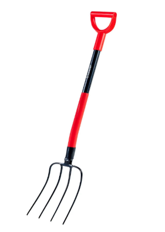
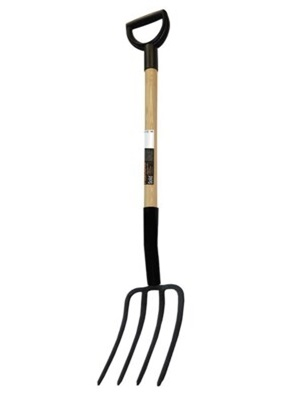

| Widełki | Opis |
|---|---|
|  |
Schmith SG-WO-1Odpowiedni profil wideł nie obciąża kręgosłupa. Wygodne uchwyty ułatwiają pracę trzonek metalowy, profilowany, wzmocniony eliptycznym przekrojem wytrzymały profilowany uchwyt głowica hartowana spawana z trzonkiem. 71.99 zł39.99 zł |
|  |
FISKARS Solid 1014819Widły FISKARS do kopania zostały wykonane z wysokiej jakości materiałów. Narzędzie doskonale sprawdzi się podczas pielenia, napowietrzania i kopania. Zęby z kutej stali umożliwiają pracę nawet w twardej glebie. Trzonek z selekcjonowanego drewna i wygodna rączka zapewnia idealną kontrolę podczas pracy. Idealne narzędzie do przenoszenia ogrodniczych odpadków i wycinków. Umożliwia przerzucanie kępek trawy do nasadzeń. Widły mogą być wykorzystane do napowietrzania trawnika. 139.99 zł59.99 zł |